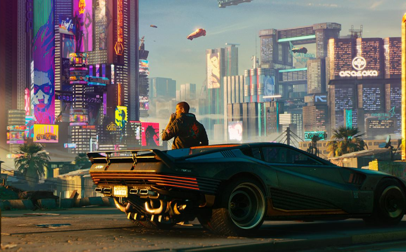
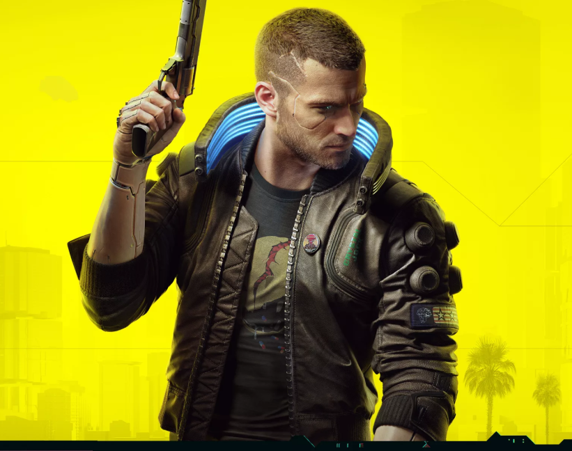

НАЙТ-СИТИ ИЗМЕНИТ ВАС НАВСЕГДА Cyberpunk 2077 — приключенческая ролевая игра, действие которой происходит в мегаполисе Найт-Сити, где власть, роскошь и модификации тела ценятся выше всего. Вы играете за V, наёмника в поисках устройства, позволяющего обрести бессмертие. Вы сможете менять киберимпланты, навыки и стиль игры своего персонажа, исследуя открытый мир, где ваши поступки влияют на ход сюжета и всё, что вас окружает.
{kind=link}
ЖИВИТЕ В ГОРОДЕ БУДУЩЕГО Исследуйте огромный мир Найт-Сити, который выглядит ярче, сложнее и глубже всего, что вы видели раньше.
ИГРАЙТЕ ЗА ГОРОДСКОГО НАЁМНИКА Станьте киберпанком — оснащённым имплантами наёмником — и сделайте себе имя на улицах Найт-Сити.
Игра повествует о приключениях персонажа по имени Ви, в городе Найт-Сити, расположенном на Западном побережье Северной Америки. Игроку будет предоставлен на выбор ряд игровых классов с возможностью их комбинирования. Игровой мир будет состоять из города, поделённого на шесть уникальных районов, в котором также будет присутствовать полный цикл дня и ночи.
назад